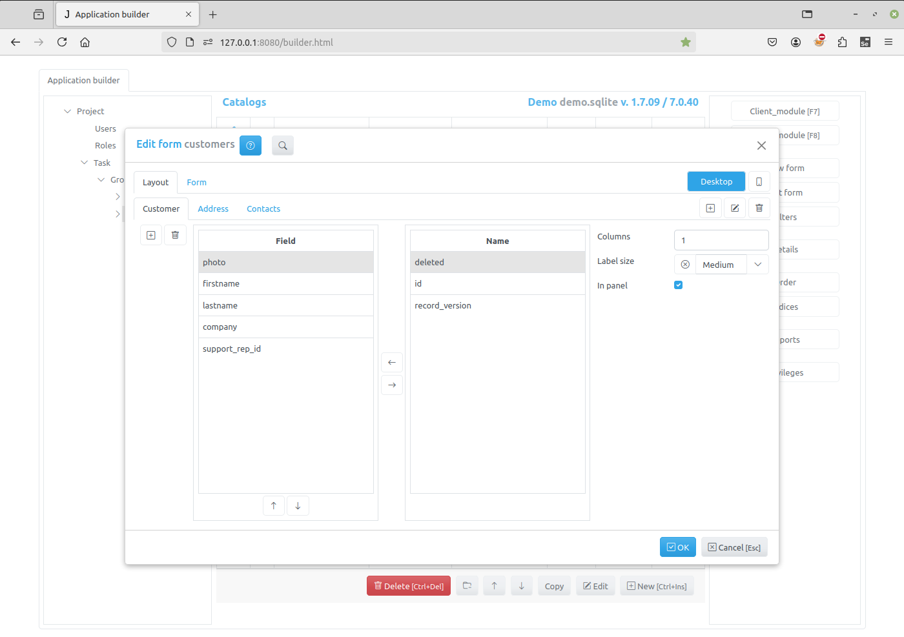
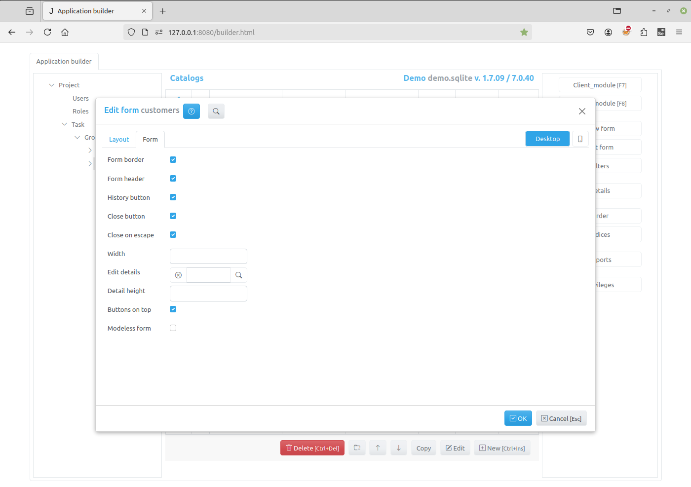

Edit Form Dialog¶
The Edit Fields Dialog opens when a developer selects the item in the Application builder and clicks the Edit Form button.
It has two tabs Layout and Form, as well as button Desktop and device.
The button Desktop is a default and device can be used for tablet and/or
mobile phone inclusion. Each option is independent to each other.
Layout tab¶
On the Layout tab, you can specify the fields that the user can edit, their order, create tabs and bands for grouping field inputs.
The Layout tab has two lists of fields. The left list contains the fields that were selected for editing. In the right list there are available fields that you can select.
To select a field, select it in the right list and use the Left arrow button in the center or press Space key on a keyboard.
To unselect a field, select it in the left list and use the Right arrow button in the center or press Space key on a keyboard.
To order the selected fields use the buttons that located below left list.
On the right side of the “Layout” tab are the controls that you can use to specify the display options for the fields selected for editing on the form.
Columns - the number of columns that will be created for field inputs
Label size - select a value that determines the size of the labels displayed to the right of the field input:
xSmall
Small
Medium
Large
xLarge
In panel - if set, the div containing the inputs will have an inset effect
You can create tabs and bands and customize fields that you can edit on each tab or band.
On the right side of the tab there are three buttons for adding, editing or deleting tabs of the edit form.
On the left side of the tab there are two buttons for adding and deleting of bands.
Each tab can have several bands.
After creating tabs and bands, you can use field lists and controls on the right to customize the fields that will be edited on each tab and band.
Form tab¶
On this tab are the controls that you can use to specify the options of the edit form
Form border - if set, the border will be displayed around the form
Form header - if set, the form header will be created and displayed containing form title and various buttons
History - if set and saving change history is enabled, the history button will be displayed in the form header
Close button - if set, the close button will be created in the upper-right corner of the form
Close on escape - - if set, pressing on the Escape key will close the form
Width - an integer, the width of the modal form, if not set the value is 600 px
Edit details - click the button to the right of the input field to select details, that will be available for editing in the edit form
Detail height - an integer, the height of the details desplayed in the edit form, if not set, the height of the detail table is 262px
Buttons on top - if this check box is checked the buttons are displayed on the top of the view form, when form has a default form template
Modeless form - if this check box is checked the form will be modeless, otherwise - modal.
Click the OK button to save to result or Cancel to cancel the operation.
After saving, you can see the changes by refreshing the project page.